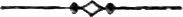

Introduction¶
Chuang Tzŭ1 belongs to the third and fourth centuries before Christ. He lived in the feudal age, when China was split up into a number of States owning a nominal allegiance to the royal, and weakly, House of Chou.
He is noticed by the historian Ssŭ-ma Ch'ien, who flourished at the close of the second century B.C., as follows:—
Chuang Tzŭ was a native of Mêng.2 His personal name was Chou. He held a petty official post at Ch'i-yüan in Mêng.3 He lived contemporaneously with Prince Hui of the Liang State and Prince Hsüan of the Ch'i State. His erudition was most varied; but his chief doctrines are based upon the sayings of Lao Tzŭ.4 Consequently, his writings, which extend to over 100,000 words, are mostly allegorical.5
He wrote The Old Fisherman, Robber Chê, and Opening Trunks, with a view to asperse the Confucian school and to glorify the mysteries of Lao Tzŭ.6 Wei Lei Hsü, Kêng Saṅg Tzŭ, and the like, are probably unsubstantial figments of his imagination.7 Nevertheless, his literary and dialectic skill was such that the best scholars of the age proved unable to refute his destructive criticism of the Confucian and Mihist schools.8
His teachings were like an overwhelming flood, which spreads at its own sweet will. Consequently, from rulers and ministers downwards, none could apply them to any definite use.9
Prince Wei of the Ch'u State, hearing of Chuang Tzŭ's good report, sent messengers to him, bearing costly gifts, and inviting him to become Prime Minister. At this Chuang Tzŭ smiled and said to the messengers, "You offer me great wealth and a proud position indeed; but have you never seen a sacrificial ox?—When after being fattened up for several years, it is decked with embroidered trappings and led to the altar, would it not willingly then change places with some uncared-for pigling?... Begone! Defile me not! I would rather disport myself to my own enjoyment in the mire than be slave to the ruler of a State. I will never take office. Thus I shall remain free to follow my own inclinations."10
To enable the reader to understand more fully the writings of Chuang Tzŭ, and to appreciate his aim and object, it will be necessary to go back a few more hundred years.
In the seventh century B.C., lived a man, now commonly spoken of as Lao Tzŭ. He was the great Prophet of his age. He taught men to return good for evil, and to look forward to a higher life. He professed to have found the clue to all things human and divine.
He seems to have insisted that his system could not be reduced to words. At any rate, he declared that those who spoke did not know, while those who knew did not speak.
But to accommodate himself to conditions of mortality, he called this clue TAO, or The Way, explaining that the word was to be understood metaphorically, and not in a literal sense as the way or road upon which men walk.
The following are sentences selected from the indisputably genuine remains of Lao Tzŭ, to be found scattered here and there in early Chinese literature:—
All the world knows that the goodness of doing good is not real goodness.
When merit has been achieved, do not take it to yourself. On the other hand, if you do not take it to yourself, it shall never be taken from you.
By many words wit is exhausted. It is better to preserve a mean.
Keep behind, and you shall be put in front. Keep out, and you shall be kept in.
What the world reverences may not be treated with irreverence.
Good words shall gain you honour in the market-place. Good deeds shall gain you friends among men.
He who, conscious of being strong, is content to be weak,—he shall be a cynosure of men.
The Empire is a divine trust, and may not be ruled. He who rules, ruins. He who holds by force, loses.
Mighty is he who conquers himself.
He who is content, has enough.
To the good I would be good. To the not-good I would also be good, in order to make them good.
If the government is tolerant, the people will be without guile. If the government is meddling, there will be constant infraction of the law.
Recompense injury with kindness.
The wise man's freedom from grievance is because he will not regard grievances as such.
Of such were the pure and simple teachings of Lao Tzŭ. But it is upon the wondrous doctrine of Inaction that his claim to immortality is founded:—
Do nothing, and all things will be done.
I do nothing, and my people become good of their own accord.
Abandon wisdom and discard knowledge, and the people will be benefited an hundredfold.
The weak overcomes the strong, the soft overcomes the hard. All the world knows this; yet none can act up to it.
The softest things in the world override the hardest. That which has no substance enters where there is no fissure. And so I know that there is advantage in Inaction.
Such doctrines as these were, however, not likely to appeal with force to the sympathies of a practical people. In the sixth century B.C., before Lao Tzŭ's death, another Prophet arose. He taught his countrymen that duty to one's neighbour comprises the whole duty of man. Charitableness of heart, justice, sincerity, and fortitude,—sum up the ethics of Confucius. He knew nothing of a God, of a soul, of an unseen world. And he declared that the unknowable had better remain untouched.
Against these hard and worldly utterances, Chuang Tzŭ raised a powerful cry. The idealism of Lao Tzŭ had seized upon his poetic soul, and he determined to stem the tide of materialism in which men were being fast rolled to perdition.
He failed, of course. It was, indeed, too great a task to persuade the calculating Chinese nation that by doing nothing, all things would be done. But Chuang Tzŭ bequeathed to posterity a work which, by reason of its marvellous literary beauty, has always held a foremost place. It is also a work of much originality of thought. The writer, it is true, appears chiefly as a disciple insisting upon the principles of a Master. But he has contrived to extend the field, and carry his own speculations into regions never dreamt of by Lao Tzŭ.
It may here be mentioned that the historian Ssŭ-ma Ch'ien, already quoted, states in his notice of Lao Tzŭ that the latter left behind him a small volume in 5,000 and odd characters. Ssŭ-ma Ch'ien does not say, nor does he give the reader to understand, that he himself had ever seen the book in question. Nor does he even hint (see p. v.) that Chuang Tzŭ drew his inspiration from a book, but only from the "sayings" of Lao Tzŭ.
Confucius never mentions this book. Neither does Mencius, China's "Second Sage," who was born about one hundred years after the death of the First.
But all this is a trifle compared with the fact that Chuang Tzŭ himself never once alludes to such a book; although now, in this nineteenth century, there are some, happily few in number, who believe that we possess the actual work of Lao Tzŭ's pen. It is, perhaps, happier still that this small number cannot be said to include within it the name of a single native scholar of eminence. In fact, as far as I know, the whole range of Chinese literature yields but the name of one such individual who has ever believed in the genuineness of the so-called Tao-Tê-Ching.11 Even he would probably have remained unknown to fame, had he not been brother to Su Tung-p'o.12
Chuang Tzŭ, indeed, puts into the mouth of Lao Tzŭ sayings which are now found in the Tao-Tê-Ching, mixed up with a great many other similar sayings which are not to be found there. But he also puts sayings, which now appear in the Tao-Tê-Ching, into the mouth of Confucius (p. 275)! And even into the mouth of the Yellow Emperor (pp. 277-278), whose date is some twenty centuries earlier than that of Lao Tzŭ himself!!
Two centuries before the Christian era, an attempt was made to destroy, with some exceptions, the whole of Chinese literature, in order that history might begin anew from the reign of the First Emperor of united China. The extent of the actual mischief done by this "Burning of the Books" has been greatly exaggerated. Still, the mere attempt at such a holocaust gave a fine chance to the scholars of the later Han dynasty (A.D. 25-221), who seem to have enjoyed nothing so much as forging, if not the whole, at any rate portions, of the works of ancient authors. Some one even produced a treatise under the name of Lieh Tzŭ, a philosopher mentioned by Chuang Tzŭ, not seeing that the individual in question was a creation of Chuang Tzŭ's brain!
And the Tao-Tê-Ching was undoubtedly pieced together somewhere about this period, from recorded sayings and conversations of Lao Tzŭ.13
Chuang Tzŭ's work has suffered in like manner. Several chapters are clearly spurious, and many episodes have been interpolated by feeble imitators of an inimitable style.
The text, as it now stands, consists of thirty-three chapters. These are a reduction from fifty-three, which appear to have been in existence in the fourth century A.D.14 The following is the account given in the Imperial Catalogue of the first known edition:—
Chuang Tzŭ, with Commentary, in 10 books. By Kuo Hsiang of the Chin dynasty (A.D. 265-420).
The Shih-shuo-hsin-yü15 states that Kuo Hsiang stole his work from Hsiang Hsiu.16 Subsequently, Hsiang Hsiu's edition was issued, and the two were in circulation together. Hsiang Hsiu's edition is now lost, while Kuo Hsiang's remains.
Comparison with quotations from Hsiang Hsiu's work, as given in Chuang Tzŭ Explained, by Lu Tê-ming, shows conclusive evidence of plagiarism. Nevertheless, Kuo Hsiang contributed a certain amount of independent revision, making it impossible for us to regard the whole as from the hand of Hsiang Hsiu. Consequently, it now passes under the name of Kuo Hsiang.
Since Kuo Hsiang's time, numberless editions with ever-varying interpretations have been produced to delight and to confuse the student. Of these, I have chosen six, representative as nearly as possible of different schools of thought. Their editors are:—
1.—Kuo Hsiang of the Chin dynasty. (a) As given in the Shih Tzŭ Ch'üan Shu, or Complete Works of the Ten Philosophers. (b) As edited by Tan Yüan-ch'un, of the Ming dynasty, with his own valuable notes.
2.—Lü Hui-ch'ing of the Sung dynasty.
3.—Lin Hsi-yi of the Sung dynasty.
4.—Wang Yü of the Sung dynasty. Son of the famous Wang An-shih.
5.—Hsing Tung, a Taoist priest of the Ming dynasty.
6.—Lin Hsi-chung, of the Ming and Ch'ing dynasties.
Where there is a consensus of opinion, I have followed such interpretation without demur. But where opinions differ, I have not hesitated to accept that interpretation which seemed to me to be most in harmony with the general tenor of Chuang Tzŭ's philosophy. And where all commentators fail equally, as they sometimes do, to yield anything at all intelligible, I have then ventured to fall back upon what Chuang Tzŭ himself would have called the "light of nature." Always keeping steadily in view the grand precept of Lin Hsi-chung, that we should attempt to interpret Chuang Tzŭ neither according to Lao Tzŭ, nor according to Confucius, nor according to Buddha, but according to Chuang Tzŭ himself.
Of the thirty-three existing chapters, the first seven are called "inside" chapters, the next fifteen "outside," and the remaining eleven "miscellaneous."
The meaning of "inside" and "outside" is a matter of dispute. Some Chinese critics have understood these terms in the obvious sense of esoteric and exoteric. But it is simpler to believe with others that the titles of the first seven chapters are taken from the inside or subject-matter, while the outside chapters are so named because their titles are derived casually from words which happen to stand at the beginning or outside of each.
Compared with the "miscellaneous," these latter seem to have been classed together as elucidating a single principle in terms more easy of apprehension; while the "miscellaneous" chapters embrace several distinct trains of thought, and are altogether more abstruse. The arrangement is unscientific, and it was probably this which caused Su Tung-p'o to decide that division into chapters belongs to a later age. He regards chaps. xxix-xxxii as spurious, although Ssŭ-ma Ch'ien alludes to two of these as Chuang Tzŭ's work. It has indeed been held that the inside chapters alone (i-vii) are from Chuang Tzŭ's own pen. But most of the other chapters, exclusive of xxix-xxxii, contain unmistakable traces of a master hand. Ch. xvii, by virtue of an exquisite imagery, has earned for its author the affectionate sobriquet of "Chou of the Autumn Floods."
Chuang Tzŭ, it must be remembered, has been for centuries classed as a heterodox writer. His work was an effort of reaction against the materialism of Confucian teachings. And in the course of it he was anything but sparing of terms. Confucius is dealt with in language which no modern literate can approve. But the beauty and vigour of the language are facts admitted by all. He is constantly quoted in the great standard lexicon which passes under the name of K'ang Hsi.
But no acquaintance with the philosophy of Chuang Tzŭ would assist the candidate for honours at the competitive examinations which are the portals to official place and power. Consequently, Chuang Tzŭ is studied chiefly by older men, who have retired from office, or who have been disappointed in their career. Those too who are dominated by a religious craving for something better than mortality, find in his pages much agreeable solace against the troubles of this world, with an implied promise of another and a better world to come.
It has been publicly announced that translations of Lao Tzŭ and Chuang Tzŭ are to appear among the Sacred Books of the East.17
Now to include the Tao-Tê-Ching in such a series would be already a doubtful step. Apart from spuriousness, it can only by a severe stretch of courtesy be termed a "sacred book." It undoubtedly contains many of Lao Tzŭ's sayings, but it also undoubtedly contains much that Lao Tzŭ never said and never could have said. It illustrates rather that period when the pure Tao of Lao Tzŭ began to be corrupted by alchemistic research and gropings after the elixir of life. It was probably written up in self-defence against the encroachments of Buddhism, in those early days of religious struggle when China was first flooded with the "sacred books" of the West. It is not seriously recognised as the Canon of ancient Taoism. Among the Taoists of to-day, not one in ten thousand has more than heard its name. For modern Taoism is but a hybrid superstition,—a mixture of ancient nature-worship and Buddhistic ceremonial, with Tao as the style of the firm. Its teachings are farther removed from the Tao of Lao Tzŭ than Ritualism from the Christianity of Christ.
As to Chuang Tzŭ, his work can in no sense be called "sacred." Unless indeed we modify somewhat the accepted value of terms, and reckon the works of Aristotle among the "sacred" books of the Greeks. Chuang Tzŭ was scarcely the founder of a school. He was not a Prophet, as Lao Tzŭ was, nor can he fairly be said ever to have been regarded by genuine Taoists as such.
When, many centuries later, the light of Lao Tzŭ's real teachings had long since been obscured, then a foolish Emperor conferred upon Chuang Tzŭ's work the title of Holy Canon of Nan-hua.18 But this was done solely to secure for the follies of the age the sanction of a great name. Not to mention that Lieh Tzŭ's alleged work, and many other similar forgeries have also been equally honoured. So that if works like these are to be included among the Sacred Books of the East, then China alone will be able to supply matter for translation for the next few centuries to come.
Partly of necessity, and partly to spare the general reader, I have relegated to a supplement all textual and critical notes involving the use of Chinese characters. This supplement will be issued as soon as possible after my return to China. It will not form an integral part of the present work, being intended merely to assist students of the language in verifying the renderings I have here seen fit to adopt. As a compromise I have supplied a kind of running commentary, introduced, in accordance with the Chinese system, into the body of the text. It is hoped that this will enable any one to understand the drift of Chuang Tzŭ's allusions, and to follow arguments which are usually subtle and oft-times obscure.
Only one previous attempt has been made to place Chuang Tzŭ in the hands of English readers.19 In that case, the knowledge of the Chinese language possessed by the translator was altogether too elementary to justify such an attempt.20
HERBERT A. GILES.
Note on the Philosophy of Chaps. i-vii¶
By the Rev. AUBREY MOORE,
Tutor of Keble and Magdalen Colleges, Oxford; Hon. Canon of Christ Church, &c.

The translator of Chuang Tzŭ has asked me to append a note on the philosophy of chs. i-vii. It is difficult to see how one who writes not only in ignorance of Chinese modes of thought, but with the preconceptions of Western philosophy, can really help much towards the understanding of an admittedly obscure system, involving terms and expressions on which Chinese scholars are not yet agreed. But an attempt to point out parallelisms of thought and reasoning between East and West may be of use in two ways. It may stimulate those who are really competent to understand both terms in the comparison to tell us where the parallelism is real and where it is only apparent; and it may help to accustom ordinary readers to look for and expect resemblances in systems in which an earlier age would have seen nothing but contrasts.
There was a time when historians of Greek philosophy used to point out what were considered to be the characteristics of Greek thought, and then to put down to "Oriental influence" anything which did not at once agree with these characteristics. How and through what channels this "Oriental influence" was exercised, it was never easy to determine, nor was it always thought worthy of much discussion. In recent times, however, a greater knowledge of Eastern systems has familiarised us with much which, on the same principle, ought to be attributed to "Greek influence." And the result has been that we have learned to put aside theories of derivation, and to content ourselves with tracing the evolution of reason and of rational problems, and to expect parallelisms even where the circumstances are widely different.
One instance may be worth quoting in illustration. We used to be told that the Greek mind, in its speculation and its art, was characterised by its love of order, harmony, and symmetry, in contrast with the monstrous creations of the Oriental imagination, and the "colossal ugliness of the Pyramids"; and it was said with reason that the Aristotelian doctrine of "the mean" was the ripe fruit of the practical inquiries of the Greeks, and was the ethical counterpart of their artistic development. But in 1861 we were introduced by Dr. Legge to a Confucianist work, attributed to Tzŭ Tzŭ, grandson of Confucius and a contemporary of Socrates, and entitled The Doctrine of the Mean,21 which is there represented as the true moral way in which the perfect man walks, while all else go beyond or fall short of it. Yet even those who discovered the doctrine of the Trinity in the Tâo-Tê-Ching have not, we believe, suggested that Aristotle had private access to the Li Chi.
We may then, without bringing any charge of piracy or plagiarism against either, point out some parallels between Chuang Tzŭ and a great Greek thinker.
Chuang Tzŭ's first chapter is mainly critical and destructive, pointing out the worthlessness of ordinary judgments, and the unreality of sense knowledge. The gigantic Rukh, at the height of 90,000 li, is a mere mote in the sunbeam. For size is relative. The cicada, which can just fly from tree to tree, laughs with the dove at the Rukh's high flight. For space also is relative. Compared with the mushroom of a day, P'êng Tsu is as old as Methuselah; but what is his age to that of the fabled tree, whose spring and autumn make up 16,000 years? Time, then, is relative too. And though men wonder at him who could "ride upon the wind and travel for many days," he is but a child to one who "roams through the realms of For-Ever."
This doctrine of "relativity," which is a commonplace in Greek as it is in modern philosophy, is made the basis, both in ancient and modern times, of two opposite conclusions. Either it is argued that all sense knowledge is relative, and sense is the only organ of knowledge, therefore real knowledge is impossible; or else the relativity of sense knowledge leads men to draw a sharp contrast between sense and reason and to turn away from the outward in order to listen to the inward voice. The one alternative is scepticism, the other idealism. In Greek thought the earliest representatives of the former are the Sophists, of the latter Heracleitus.
There is no doubt to which side of the antithesis Chuang Tzŭ belongs. His exposure of false and superficial thinking looks at first like the destruction of knowledge. Even Socrates was called a Sophist because of his destructive criticism and his restless challenging of popular views. But Chuang Tzŭ has nothing of the sceptic in him. He is an idealist and a mystic, with all the idealist's hatred of a utilitarian system, and the mystic's contempt for a life of mere external activity. "The perfect man ignores self; the divine man ignores action; the true sage ignores reputation" (p. 5). The Emperor Yao would have abdicated in favour of a hermit, but the hermit replies that "reputation is but the shadow of reality," and will not exchange the real for the seeming. But greater than Yao and the hermit is the divine being who dwells on the mysterious mountain in a state of pure, passionless inaction.
For the sage, then, life means death to all that men think life, the life of seeming or reputation, of doing or action, of being or individual selfhood. This leads on to the "budget of paradoxes" in chap. II. As in the moral and active region we escape from the world and self, and are able to reverse and look down upon the world's judgments, so in the speculative region we get behind and beyond the contradictions of ordinary thinking, and of speech which stereotypes abstractions. The sage knows nothing of the distinction between subjective and objective. It exists only ex analogiâ hominis. "From the standpoint of Tao" all things are one. People "guided by the criteria of their own mind," see only the contradiction, the manifoldness, the difference; the sage sees the many disappearing in the One, in which subjective and objective, positive and negative, here and there, somewhere and nowhere, meet and blend. For him, "a beam and a pillar are identical. So are ugliness and beauty, greatness, wickedness, perverseness, and strangeness. Separation is the same as construction: construction is the same as destruction" (pp. 19-20). The sage "blends everything into one harmonious whole, rejecting the comparison of this and that. Rank and precedence, which the vulgar prize, the sage stolidly ignores. The universe itself may pass away, but he will flourish still" (p. 29). "Were the ocean itself scorched up, he would not feel hot. Were the milky way frozen hard he would not feel cold. Were the mountains to be riven with thunder, and the great deep to be thrown up by storm, he would not tremble" (pp. 27-28).
Si fractus illabatur orbis,
Impavidum ferient ruinæ.
He is "embraced in the obliterating unity of God," and passing into the realm of the Infinite finds rest therein (p. 31).
It is impossible in reading this chapter on "The Identity of Contraries" not to be reminded of Heracleitus. The disparagement of sense knowledge, and the contempt for common views is indeed equally marked in Eleaticism, and there is much in Chuang Tzŭ which recalls Parmenides,22 so far as the contrast between the way of truth and the way of error, the true belief in the One and the popular belief in the Many, is concerned. But it seems to me that the "One" of Chuang Tzŭ is not the dead Unit of Eleaticism, which resulted from the thinking away of differences, but the living Unity of Heracleitus, in which contraries co-exist. Heracleitus, indeed, seems to have been a man after Chuang Tzŭ's own heart, not only in his obscurity, which won for him the title of ὁ σκοτεινὸς, but in his indifference to worldly position, shown in the fact that, like the Emperor Yao, he abdicates in his brother's favour (Diog. Laert. ix. 1), and in his supercilious disregard for the learned like Hesiod and Pythagoras and Xenophanes and Hecataeus,23 no less than for the common people24 of his day.
"Listen," says Heracleitus, "not to me, but to reason, and confess the true wisdom that 'All things are One.'"25 "All is One, the divided and the undivided, the begotten and the unbegotten, the mortal and the immortal, reason and eternity, father and son, God and justice."26 "Cold is hot, heat is cold, that which is moist is parched, that which is dried up is wet."27 "Good and evil are the same."28 "Gods are mortal, men immortal: our life is their death, our death their life."29 "Upward and downward are the same."30 "The beginning and the end are one."31 "Life and death, sleeping and waking, youth and age are identical."32
This is what reason tells the philosopher. "All is One." The world is a unity of opposing forces (παλίντροπος ἁρμονίη κόσμου ὅκωσπερ λύρας καὶ τόξου).33 "Join together whole and not whole, agreeing and different, harmonious and discordant. Out of all comes one: out of one all."34 "God is day-night, winter-summer, war-peace, repletion-want."35 The very rhythm of nature is strife. War, which men hate and the poets would banish, "is the father and lord of all."36 But "men are without understanding, they hear and hear not,"37 or "they hear and understand not."38 For they trust to their senses, which are "false witnesses."39 They see the contradictions, but know not that "the different is at unity with itself."40 They cannot see the "hidden harmony, which is greater than the harmony which is seen."41 For they live in the external, the commonplace, the relative, and never rise above the life of the senses. "The sow loves the mire."42 "The ass prefers fodder to gold."43 And men love their "private conceits" instead of clinging to the universal reason which orders all things,44 and which even the sun obeys.45
Of the fragments which remain to us of Heracleitus, the greater number belong to the region of logic and metaphysics, while Chuang Tzŭ devotes much space to the more practical side of the question. He not only ridicules those who trust their senses, or measure by utilitarian standards, or judge by the outward appearance;—he teaches them how to pass from the seeming to the true. The wonderful carver, who could cut where the natural joints are,46 is one who sees not with the eye of sense but with his mind. When he is in doubt he "falls back upon eternal principles"; for he is "devoted to Tao" (chap. iii). There is something of humour, as well as much of truth, in the rebuke which Confucius, speaking pro hâc vice as a disciple of Lao Tzŭ, administers to his self-confident follower who wanted to "be of use." "Cultivate fasting;—not bodily fasting, but the fasting of the heart." Tao can only abide in the life which has got rid of self. So the Duke of Shê is reminded that there is something higher than duty,47 viz., destiny, the state, that is, in which conscious obedience has given way to that which is instinctive and automatic. The parable of the trees (pp. 50-53), with its result in the survival of the good-for-nothing, is again a reversal of popular outside judgments. For as the first part of the chapter had taught the uselessness of trying to be useful, so the last part teaches the usefulness of being useless. And the same thought is carried on in the next chapter, which deals with the reversal of common opinion as to persons. Its motto is:—Judge not by the appearance. Virtue must prevail and outward form be forgotten. The loathsome leper Ai T'ai To is made Prime Minister by the wise Duke Ai. The mutilated criminal is judged by Lao Tzŭ to be a greater man than Confucius. For the criminal is mutilated in body by man, while Confucius, though men know it not, by the judgment of God is πεπηρωμένος πρὸς ἀρετήν.
This protest of Chuang Tzŭ against externality, and judging only by the outward appearance, might easily be translated into Christian language. For Christianity also teaches inwardness, and, in common with all idealism, resents the delimitation of human life and knowledge to "the things which are seen." In its opposition to a mere practical system like Confucianism, Taoism must have appealed to those deeper instincts of humanity to which Buddhism appealed some centuries later. In practice, Confucianism was limited to the finite. Action, effort, benevolence, unselfishness,—all these have a place in it, and their theatre is the world as we know it. Its last word is worldly wisdom; not selfishness, but an enlarged prudentialism. To the Taoist such a system savours of "the rudiments of the world." Its "charity and duty," its "ceremonies and music," are the "Touch not, taste not, handle not," of an ephemeral state of being, and perish in the using. And the sage seeks for the Absolute, the Infinite, the Eternal. He seeks to attain to Tao.
It is here that we reach (in chaps. vi, vii) what properly constitutes the mysticism of Chuang Tzŭ. Heracleitus is not a mystic, though he is the founder of a long line, which through Plato, and Dionysius the Areopagite and John the Scot in the ninth century, and Meister Eckhart in the thirteenth, and Jacob Böhme in the sixteenth, reaches down to Hegel. Heracleitus despises the world and shuns it; but he has not yet made flight from the world a dogma. Even Plato, when in a well-known passage in the Theaetetus,48 he counsels flight from the present state of things, explains that he means only "flee from evil and become like God." Still less has Heracleitus got so far as to aim at self-absorption in God. In Greek thought the attempt to get rid of consciousness, and to become the unconscious vehicle of a higher illumination, is unknown till the time of Philo. Yet this is the teaching of Chuang Tzŭ. "The true sage takes his refuge in God, and learns that there is no distinction between subject and object. This is the very axis of Tao" (p. 18). Abstraction from self, then, is the road which leads to Tao (chap. vi). The pure of old did not love life and hate death. They were content to be passive vehicles of Tao. They had reached the state of sublime indifference, they had become "oblivious of their own existence." Everything in them was spontaneous; nothing the result of effort. "They made no plans; therefore failing, they had no cause for regret; succeeding, no cause for congratulation" (p. 69). "They cheerfully played their allotted parts, waiting patiently for the end." They were free, for they were in perfect harmony with creation (p. 71). For them One and not One are One; God and Man. For they had attained to Tao, and Tao is greater than God. "Before heaven and earth were, Tao was. It has existed without change from all time. Spiritual beings draw their spirituality therefrom; while the universe became what we see it now. To Tao the zenith is not high, nor the nadir low; no point of time is long ago, nor by lapse of ages has it grown old" (p. 76). The great legislators obtained TAO, and laid down eternal principles. The sun and moon, and the Great Bear are kept in their courses by Tao.
"Thou dost preserve the stars from wrong;
And the most ancient heavens, through thee, are fresh and strong."
He who would attain to Tao must get rid of the thought of "charity and duty," of "music and ceremonies," of body and mind. The flowers and the birds do not toil, they simply live. That is Tao. And for man a state of indifference and calm, the ἀταραξία not of the sceptic but of the mystic, a passive reflecting of the Eternal, is the ideal end. "The perfect man employs his mind as a mirror. It grasps nothing, it refuses nothing. It receives but does not keep. And thus he can triumph over matter without injury to himself." (See p. 98.)
It would of course be presumption to attempt to assign a meaning to Tao, and still more to discover an equivalent in Western thought. But it may be lawful to say that Heracleitus often speaks of Λόγος as Chuang Tzŭ speaks of Tao. It is Necessity (ἀνάγκη), or Fate (εἱμαρμένη), or Mind (γνώμη), or Justice (Δική). In nature it appears as balance and equipoise; in the State as Law; in man as the universal Reason, which is in him but not of him. Sometimes it is identified with the mysterious name of Zeus, which may not be uttered;49 sometimes like the Ἀνάγκη of the Greek poets, it is supreme over gods and men. If it is hard to say what is the relation of Tao to God, it is not less hard to define the relation of Λόγος to Zeus. To speak of Chuang Tzŭ and Heracleitus as pantheists is only to say that, so far as we can translate their language into ours, that name seems less inappropriate than Theist or Deist. But it is doubtful whether the distinction between Pantheism and Theism would have been intelligible to either philosopher, and certain that if they could have understood it, they would have denied to it reality. Both held the immanence of the Eternal Principle in all that is. Both taught that the soul is an emanation from the Divine, and both, though in very different degrees, seem to teach that a life is perfect in proportion as it becomes one with that from which it came, and loses what is individual in it.
In Chuang Tzŭ, as in all mystics, there is an element of antinomianism. That "good and evil are the same," may contain a deep truth for the sage, but "take no heed of time, nor of right and wrong" (p. 31) is, to say the least, dangerous teaching for the masses. The mystic's utterances will not bear translation into the language of the world, and to take them au pied de la lettre can hardly fail to produce disastrous results. This is why antinomianism always dogs the heels of mysticism. And this may perhaps help to explain the debased Taoism of to-day. But of this I know nothing.
It would be interesting to know whether in the undisputed utterances of Lao Tzŭ (i. e. putting on one side the Tâo-Tê-Ching), Quietism and the glorification of Inaction are as prominent as they are in Chuang Tzŭ. One would be prepared à priori to find that they are not. Lao Tzŭ was born at the end of the seventh century B.C., and was, therefore, some fifty years older than Confucius, with whom in 517 B.C., he is said to have had an interview.50 By the time of Chuang Tzŭ, who was possibly contemporary with Mencius, and therefore some two or three centuries after Lao Tzŭ, Confucianism had become to some extent the established religion of China, and Taoism, like Republicanism in the days of the Roman Empire, became a mere opposition de salon. Under such circumstances any elements of mysticism latent in Lao Tzŭ's system would develop rapidly. And the antagonism between the representatives of Lao Tzŭ and Confucius would proportionately increase. But philosophy does not become mystical and take refuge in flight until it abandons all hope of converting the world. When effort is useless, the mind idealises Inaction, and seeks a metaphysical basis for it. For mysticism and scepticism flourish in the same atmosphere though in different soils, both, though in different ways, implying the abandonment of the rational problem. The Sceptic, the Agnostic or Positivist of to-day, declares it insoluble, and settles down content to take things as they are; the mystic retires into himself, and dreams of a state of being which is the obverse of the world of fact.
The triumph of Confucianism in the centuries which intervened between Lao Tzŭ and Chuang Tzŭ would account for the antagonism between Taoism and Confucianism as we find it. But it fails to account for the way in which Confucius is sometimes represented as playing into the hands of Taoism. On p. 85 f. n. the translator explains it as a literary coup de main. Dr. Chalmers, quoted by Dr. Legge,51 says that both Chuang Tzŭ and Lieh Tzŭ introduced Confucius into their writings "as the lords of the Philistines did the captive Samson on their festive occasions, 'to make sport for them.'" But there is not a hint of this given in the text, though throughout one long chapter (chap. iv) we find Confucius giving a Taoist refutation of Confucianist doctrines when defended by his own pupil Yen Hui. It might seem like an attempt to draw a distinction between Confucius and Confucianism, though elsewhere Confucius is ridiculed as wanting in sense.
May not the explanation be as follows?—
(i.) Lao Tzŭ and Confucius were probably much nearer to one another philosophically than the Taoism of Chuang Tzŭ and the Confucianism of Mencius. The passages in which Confucius talks Taoism would, on this hypothesis, represent a traditional survival of their real relations to one another. The episode of Confucius' visit to Lao Tzŭ "to ask about the Tao," would, whether it records a fact or not, tend in the same direction.
(iii.) The divergence between the two views, the ideal and the actual, the mystical and the practical, would increase with time, each intensifying the other by opposition and reaction, until the practical won its way to security, and the mystical got left out in the cold, perhaps persecuted, certainly suspected, and treated as heterodox, and naturally retaliating by scornful criticism of the dominant view. When this stage is reached, Mencius regards Lao Tzŭ as a heresiarch, while Chuang Tzŭ often treats Confucius with contempt and ridicule. For "the Way that is walked upon is not the Way," and "the Tao which shines forth is not Tao" (p. 25). But Confucianism being "established," the Taoists are now "dissenters," and not being strong enough to disestablish Confucianism become more and more mystical, and content themselves with a policy of protest.
If there is little direct evidence for this theory as to the relations of Taoism and Confucianism, there is a curious parallel in Western thought. When Plato was known only in a neo-Platonic disguise, and Aristotle judged by the Organon, it was possible for partisans to represent the two philosophers as typical opposites, and to assume that "every one is born a Platonist or an Aristotelian," forgetting that Aristotle was Plato's pupil, and both were followers of Socrates. Later on, when Aristotelianism became "established" as the Christian philosophy, Platonism, which survived in the more mystical schoolmen, fell under suspicion, and not unfrequently justified the suspicion by developing in the direction of Pantheism. It was not till the thirteenth century that the world appealed from Platonists and Aristotelians to Plato and Aristotle, and discovered that the divergent streams flowed from neighbouring springs. Such an appeal, it is to be feared, is hardly possible in the case of Lao Tzŭ and Confucius, especially as the authenticity of the Tao-Tê-Ching is still in controversy among Sinologues.
My object, however, in this note, which has grown out of all proportion, was not to suggest a theory as to the possible relations of Lao Tzŭ and Confucius, but to point out what seemed to be a remarkable parallel between the teaching of Chuang Tzŭ and Heracleitus. In doing this I have accepted Mr. Giles's translation as an ultimate fact, for the simple reason that I do not know a single Chinese character. So far, therefore, as the translation prejudices or prejudges questions of Chinese scholarship, I must leave the defence to the translator. It is also possible, and more than possible, that my Western preconceptions may have biassed my judgment of Chuang Tzŭ's philosophical teaching. Recent attempts52 to draw a parallel between the life of Gautama and the life of Christ have shown how easy it is unconsciously to read between the lines, and find parallelisms where they do not exist. If I have been guilty in the same way, then, with Socrates in the Republic, I say, "I can but suffer the penalty of ignorance; and that penalty is, to be taught by those who know."
A. L. M.
Chuang Tzŭ.
-
Pronounce Chwongdza. ↩
-
In the modern province of An-hui. ↩
-
Hence he is often spoken of in the book language as "Ch'i-yüan." ↩
-
Pronounce Lowdza. The low as in allow. See p. vii. ↩
-
Of an imaginative character, in keeping with the visionary teachings of his master. ↩
-
See chs. , , and , respectively. ↩
-
The second of these personages is doubtless identical, though the name is differently written, with the Kêng Sang Ch'u of ch. xxiii. The identity of the first name has not been satisfactorily settled. ↩
-
See p. . ↩
-
This last clause is based upon a famous passage in the Lun Yü:—The perfect man is not a mere thing; i.e., his functions are not limited. The idea conveyed is that Chuang Tzŭ's system was too far-reaching to be practical. ↩
-
See p. . ↩
-
The Canon of Tao, and of Tê, the exemplification thereof. See p. . I have discussed the claims of this work at some length in The Remains of Lao Tzŭ: Hong Kong, 1886. ↩
-
The brilliant philosopher, statesman, poet, &c., of the Sung dynasty (A.D. 1036-1101). ↩
-
A curious parallelism will be found in Supernatural Religion, vol. i, p. 460:— ↩
-
On the authority of the I-wên-chih. ↩
-
A work of the fifth century A.D. ↩
-
Of the Han dynasty. Mayers puts him a little later, viz., A.D. 275. ↩
-
The China Review, vol. xvi, p. 195. ↩
-
In A.D. 742. ↩
-
The Divine Classic of Nan-hua. By Frederic Henry Balfour, F.R.G.S., Shanghai and London, 1881. ↩
-
One example will suffice. In ch. xxiii (see p. ) there occurs a short sentence which means, "A one-legged man discards ornament, his exterior not being open to commendation." ↩
-
In 1885 this treatise was republished by Dr. Legge in its place as Bk. xxviii of the Lî Kî of Li Chi (Sacred Books of the East, vols. xxvii, xxviii), with a new title The State of Equilibrium and Harmony. But the parallelism with the Aristotelian doctrine is as obvious as ever. ↩
-
See the fragments in Ritter and Preller's Hist. Phil. Græc. § 93 and § 94 A. B. Seventh edition. ↩
-
Heracl. Eph. Rell. Bywater, xvi. ↩
-
ὀχλολοίδορος Ἡράκλειτος Timon ap. Diog. Laert. ix. i. ↩
-
Οὐκ ἐμεῦ ἀλλὰ τοὺ λόγου ἀκουσάντας ὁμολογέειν σοφόν ἐστι ἓν πάντα εἶναι. Heracl. Eph. Rell. i. ↩
-
Hippolytus Ref. haer. ix. 9. ↩
-
Heracl. Eph. Rell. xxxix. ↩
-
Ibid., lvii. ↩
-
Ibid., lxvii. ↩
-
Ibid., lxix. ↩
-
Ibid., lxx. ↩
-
Ibid., lxxviii. ↩
-
Ibid., xlv. ↩
-
Ibid., lix. ↩
-
Ibid., xxxvi. ↩
-
Ibid., xliv. ↩
-
Ibid., iii. ↩
-
Ibid., v. ↩
-
Heracl. Eph. Rell. iv. ↩
-
Ibid., xlv. ↩
-
Ibid., xlvii. ↩
-
Ibid., liv., and notes. ↩
-
Ibid., li. ↩
-
Ibid., xci, xix. ↩
-
Ibid., xxix. ↩
-
Cf. Plat. Phaedr. 265: κατ' ἄρθρα ᾑ πέφυκεν καὶ μὴ ἐπιχειρεῖν καταγνύναι μέρος μηδὲν κακοῦ μαγείρου τρόπῳ χρώμενος. ↩
-
Cf. Herbert Spencer's well-known paradox,—"The sense of duty or moral obligation is transitory, and will diminish as fast as moralisation increases."—Data of Ethics, p. 127. ↩
-
Theaet. 176. A. διὸ καὶ πειρᾶσθαι χρὴ ἐνθένδε ἐκεῖσε φεύγειν ὅ τι τάχιστα. φυγὴ δὲ ὁμοίωσις Θεῷ κατὰ τὸ δυνατόν. ὁμοίωσις δὲ δίκαιον καὶ ὅσιον μετὰ φρονήσεως γενέσθαι. ↩
-
Heracl. Eph. Rell. lxv. ↩
-
Chuang Tzŭ, chap. xiv, p. 182-189. ↩
-
Encycl. Met., Art. "Lao Tzŭ." ↩
-
E.g. Mr. Edwin Arnold's Light of Asia, and still more Professor Seydel's Das Evangelium von Jesu in seinen Verhältnissen zu Buddha-Sage and Buddha-Lehre. On the other side of the question, cf. Dr. Kellogg's The Light of Asia and The Light of the World. London, 1885. And an article in the Nineteenth Century for July, 1888, on Buddhism, by the Bishop of Colombo. ↩